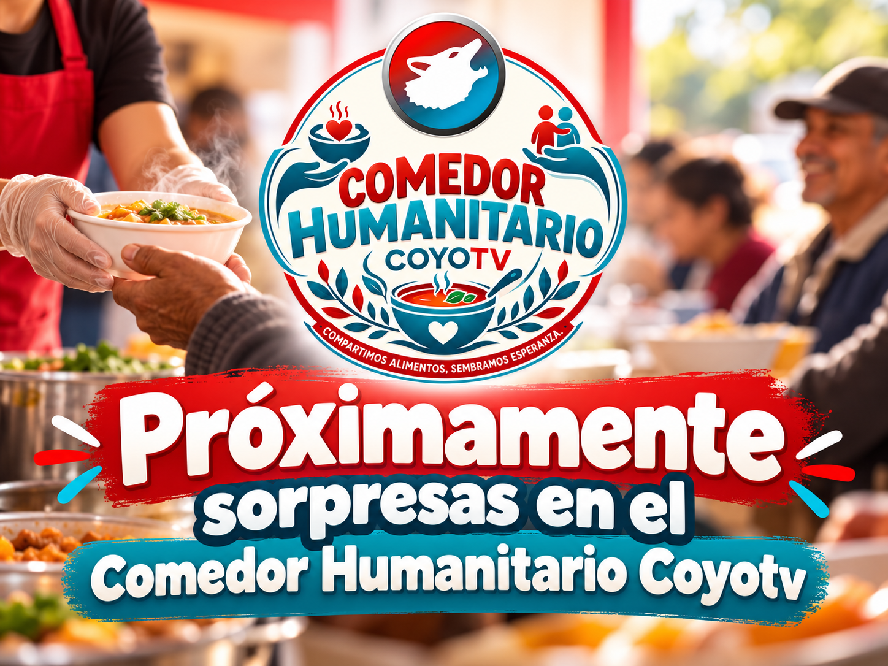

Los Corresponsables
Noticias, comunidad y servicio
NUESTRA GENTE · NUESTRA VOZ
Información, entretenimiento y la voz de nuestra comunidad.
Comprobando la señal en vivo de COYOTV…
Programas y proyectos desde Neza, para nuestra gente.
Noticias, comunidad y servicio
Videojuegos, torneos y más
Música, conversación y barrio
Menú del día · Sazón oaxaqueño
Nuestra gente y sus historias
De Neza, con Sazón Oaxaqueño · Menú diario y novedades.
El menú puede variar; confirma disponibilidad y precios directamente con el comedor.
Comida con sabor oaxaqueño y atención de barrio. Consulta nuestro menú y entérate de nuestras actividades, promociones y noticias.
📍 Calle Óscar 200, colonia Pavón, entre Juárez y Virginia, Ciudad Nezahualcóyotl.
🕘 Lunes a sábado, de 9:00 a 17:00 h.

Las imágenes son informativas y se actualizan cuando hay nuevo material.
Empresas y personas que hacen posible este proyecto.
En este espacio destacaremos a nuestros aliados con un video promocional renovado cada mes, junto con sus historias, servicios y aportaciones a nuestra comunidad.
¿Te interesa patrocinar Coyotv? Escríbenos y construyamos una propuesta juntos. Actualizaremos el video de aliados cada mes.
Contactar para patrocinios ↗Próximamente: nuestro video mensual de patrocinadores.
Espacio disponible · Escríbenos para participarSomos más que un canal, somos una comunidad.